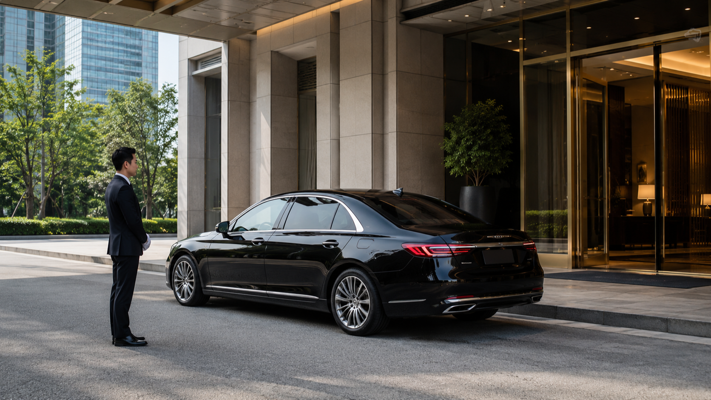

좋은 차량이 곧 좋은 서비스는 아닙니다: 한국 프리미엄 모빌리티의 실제 기준
대부분의 글로벌 브랜드와 MICE 기획자는 한국 모빌리티 파트너를 두 가지 기준으로 평가합니다. 차량 모델과 기사의 영어 구사 능력입니다. 두 가지 모두 중요합니다. 그러나 어느 쪽도 운영의 실제 성패를 결정하지는 않습니다. 한국 프리미엄 모빌리티의 기준은 이미 달라졌으며, 좋은 차량과 좋은 서비스 사이의 간극은 대부분의 고객이 예상하는 것보다 훨씬 넓습니다.
통념적 접근 방식, 그리고 그것이 부족한 이유
지난 10여 년간 한국 인바운드 브랜드 모빌리티의 기본 평가 기준은 대체로 이런 모습이었습니다. 차량이 Genesis G90 또는 Mercedes-Benz S-Class인지 확인하고, 기사가 영어를 구사하는지 확인하고, 운영사가 적절한 보험에 가입되어 있는지 확인합니다. 이 세 가지가 충족되면 계약이 이루어졌습니다.
한국의 프리미엄 모빌리티 시장이 실제로 미성숙했던 시기에는 이런 방식이 합리적인 판단 기준이었습니다. 차량 품질이 들쭉날쭉했고, 영어 구사 기사는 드물었으며, 보험 준수 여부도 보편적이지 않았습니다. 이 세 가지를 확인하는 것만으로도 신뢰할 수 있는 운영사와 그렇지 않은 곳을 구분할 수 있었습니다.
문제는 이 체크리스트가 더 이상 의미 있는 구분을 하지 못한다는 점입니다. Genesis G90 차량 표준화는 인바운드 브랜드 운영을 맡는 운영사라면 이미 기본으로 갖추고 있습니다. 기사의 기본적인 영어 소통 능력도 마찬가지입니다. 보험 역시 신뢰할 수 있는 모든 운영사가 보유하고 있습니다. 시장이 이미 자연스럽게 걸러낸 운영사들만 추가로 걸러내는 체크리스트는 실질적인 기능을 하지 못합니다.
통념적 접근 방식이 놓치는 것은 운영 설계입니다. 고객이 차량에 탑승하기 전에 이루어지는 모든 준비, 바로 그 영역에서 프리미엄 모빌리티의 성패가 실제로 결정됩니다.
운영 품질을 실제로 결정하는 것
중요한 구분은 차량 조달과 운영 설계 사이에 있습니다. 차량은 자산입니다. 운영은 사전에 내려진 결정들의 체계입니다. 하루 중 실제 운행 시간대에 맞춰 사전 답사한 경로, 언어별로 특정 고객에게 배정되어 전체 운영 기간 동안 일관되게 유지되는 기사 배치, 브랜드별 기준에 맞게 준비된 실내 환경, 모든 차량의 상태를 실시간으로 파악하는 중앙 배차 체계가 그것입니다.

모든 것이 순조로울 때 이 차이는 겉으로 드러나지 않습니다. 차이가 드러나는 것은 무언가 틀어졌을 때입니다. 오전 7시에 고객 일정이 바뀌거나, 행사장 입구가 막히거나, 두 그룹이 동시에 서로 다른 호텔 출구에서 출발해야 할 때, 설계 기반 운영은 이런 상황을 고객에게 보고하지 않고 내부적으로 흡수합니다. 배차 중심 운영은 그렇게 하지 못합니다.
이 구분이 발주 문서에 잘 드러나지 않는 이유
통념적 체크리스트가 계속 유지되는 이유 중 하나는 운영 설계를 발주 문서에 구체적으로 명시하기가 어렵기 때문입니다. "Genesis G90, 영어 구사 기사, 종합 보험"은 명확하고, 다른 업체와 비교하기도 쉽습니다. 반면 "사전 경로 답사, 언어별 기사 배정, 실시간 배차 조율, 브랜드별 실내 환경 준비"는 다른 종류의 평가를 요구합니다. 운영사가 어떤 자산을 보유하고 있는지가 아니라, 실제로 어떻게 운영하는지를 묻는 평가입니다.
글로벌 조달 팀과 인바운드 컨시어지 담당자들은 종종 한국 밖에서, 촉박한 일정 속에, 운영 역량을 직접 검증하기 어려운 상황에서 한국 모빌리티 파트너를 평가합니다. 그 결과 발주 기준은 역량 검증보다 자산 확인 위주로 흘러갑니다. 운영 인프라에 투자한 운영사와 그렇지 않은 운영사가 동일한 기준으로 평가받는 상황이 벌어집니다.
이것은 고객 탓이 아닙니다. 한국 프리미엄 모빌리티에 실제로 무엇이 필요한지를 업계가 제대로 알리지 못한 결과입니다. 운영 설계와 예약 모델의 차이를 다룬 이전 Wizmobility 인사이트에서도 언급했듯이, 지상 이동을 단순 조달 업무로 프레이밍하면 실제 고객 경험을 결정하는 역량이 구조적으로 과소평가됩니다.
더 유용한 평가 기준
인바운드 브랜드 운영, MICE 기획, 호텔 컨시어지 팀이 한국 모빌리티 파트너를 선정할 때, 다음 질문들이 기존 체크리스트보다 실질적으로 유용합니다.
운영 도중 일정이 바뀌면 어떻게 대응합니까? 이 질문 하나가 그 업체의 배차 체계 수준을 드러냅니다. 수동 배차 방식으로 운영하는 곳은 고객에게 상황을 보고합니다. 중앙 조율 체계를 갖춘 곳은 변경 사항을 내부적으로 흡수하고 해결 결과를 보고합니다.
장기간 운영에서 기사 배정은 어떻게 이루어집니까? 동일한 기사가 동일한 고객을 전체 운영 기간 동안 담당하는 고정 배정은 운영 설계의 선택이지, 기본 방식이 아닙니다. 배정이 사전 브리핑 단계에서 확정되는지, 아니면 가용 인력에 따라 순환 배치되는지 확인하십시오.
운영 전 준비 과정은 어떻게 됩니까? 경로 사전 답사, 행사 맥락에 맞춘 기사 브리핑, 브랜드 기준에 따른 실내 환경 준비가 핵심 준비 사항입니다. 첫 번째 운영일 48시간 전에 무슨 일이 이루어지는지 설명을 요청하십시오.
운영 중 호텔 컨시어지 및 브랜드 환대 담당자와 어떻게 소통합니까? 조율 방식은 차량만큼 중요합니다. 환대 팀의 커뮤니케이션 구조 안에서 능동적으로 소통하는 운영사는, 연락이 올 때까지 기다리는 운영사와 운영 방식이 근본적으로 다릅니다.
한국 프리미엄 모빌리티 시장의 흐름은 이른바 운영 투명성을 향하고 있습니다. 운영사가 보유 자산만이 아니라 운영 프로세스 자체를 문서화해 제시할 수 있어야 한다는 기대입니다. 한국에서 반복적으로 인바운드 행사를 진행해 온 글로벌 환대 브랜드들은 이미 사전 운영 브리핑 문서, 사후 운영 결과 보고서, 중앙 배차 역량의 증빙을 요구하고 있습니다. 차량 사양 확인은 여전히 있지만, 더 이상 첫 번째 질문이 아닙니다.
운영사 입장에서 이 변화는 자산만이 아니라 프로세스에 대한 투자를 보상합니다. 운영 규율이 갖춰진 팀이 운영하는 Genesis G90 차량은, 즉흥적인 배차 방식으로 운영되는 더 큰 차량 그룹보다 나은 결과를 냅니다. 차량은 바탕일 뿐, 운영이 곧 서비스입니다.
고객 입장에서는 — 브랜드 환대 팀, MICE 기획자, 컨시어지 담당자 — 평가 기준이 시장과 함께 발전해야 한다는 의미입니다. 한국의 프리미엄 모빌리티 인프라는 성숙했습니다. 이를 평가하는 발주 기준도 그 성숙도를 반영해야 합니다. 선정 단계에서 더 나은 질문을 던지는 것. 그것이 행사가 끝난 뒤 고객이 이동에 대해 아무 불만도 떠올리지 않게 만드는 가장 확실한 방법입니다. 그것이 유일하게 의미 있는 기준입니다.